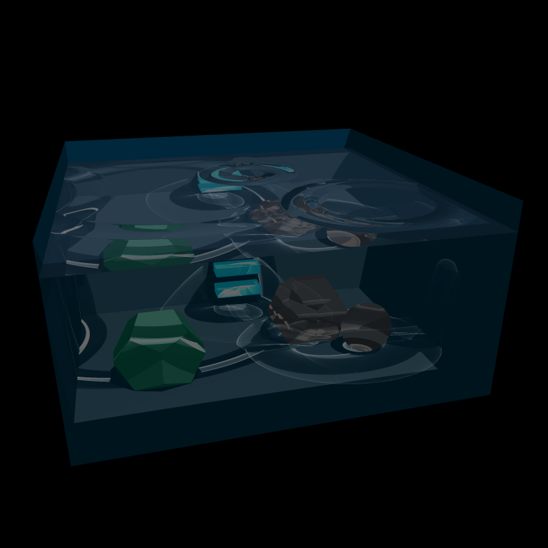

Final Image
There were some difficulties creating a truly satisfying final scene. I do feel, however, that this image is
pleasing:

The surface, while mostly transparent, is chrome mapped for the extra watery colour. Caustics are generated through the surface, but
also through the two refracting objects on the right side. (One a polyhedron, the other a sphere.) Caustics from the water surface
find themselves projected onto the sides of the volume, the polyhedron the left side, and the blue steps at the back.